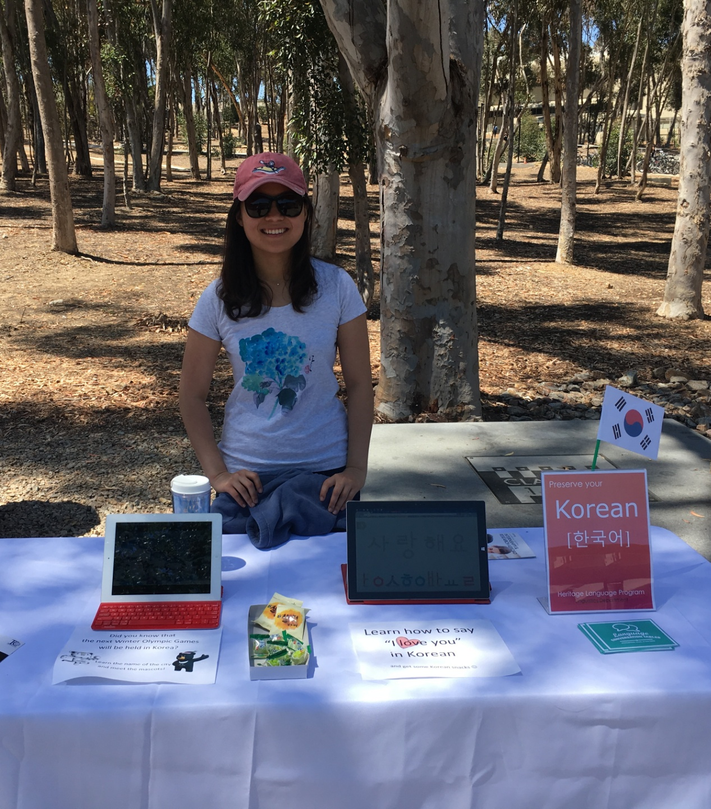

#Linguistics
#Experimental Syntax
#Korean Language


Complexity effects in Dependencies
The current study aims at investigating the syntactic representation of gap in A-dependencies compared to A-bar dependencies using complexity effects (e.g., D-linking). Experimental methods such as acceptability judgment task are used to test the varying degrees of the effect of complexity on processing different types of dependencies.
Korean Language Teaching
"Taking LIHL 115W with Dayoung Kim was one of the greatest experiences at UCSD. I was always excited to get to class and learn more about the Korean culture and language. I would strongly recommend her to other students."
"Very exuberant and has complete control of the classroom."
"She's the best you can ask for in a teacher for a language class."
comments from students